bootstrapnet - Examples
by Valentin Stefan - last update 08 November 2019
Load packages
# Install bootstrapnet if not already done:
# install.packages("devtools")
# devtools::install_github("valentinitnelav/bootstrapnet")
library(bootstrapnet)
library(magrittr)
library(bipartite)Simulate data
Generate two fictive networks from bipartite::Safariland to compare with bootstrapnet functionality:
data(Safariland)
set.seed(321)
Safariland_1 <- Safariland[, sort(sample.int(ncol(Safariland), 20))]
sum(Safariland_1) # number of interactions## [1] 305set.seed(123)
Safariland_2 <- Safariland[, sort(sample.int(ncol(Safariland), 20))]
sum(Safariland_2)## [1] 210Note that, Safariland_1 has 305 interactions and Safariland_2 has 210. This can give us an idea about the values we can use in the start and step arguments below. Presumably 10% of the interactions of the smallest network should suffice for start. And for step use 5% or 10%. Note that, very small step will require intensive CPU time and a very small start can result in many NA warnings because indices cannot be computed for the first small sampled networks.
my_start <- 50 # chosen higher than 20 to gain some CPU time
my_step <- 20
my_n_boot <- 50Network-level indices/metrics
nestedness
Resample two networks with computing “nestedness”.
The two matrices (webs) are placed in a named list (list(s1 = Safariland_1, s2 = Safariland_2)), then the data is prepared with web_matrix_to_df(), which gives a suitable data format for the boot_networklevel() function, which further prepares the bootstrapped results for ggplot.
lst_nest <- list(s1 = Safariland_1, s2 = Safariland_2) %>%
lapply(web_matrix_to_df) %>%
boot_networklevel(col_lower = "lower", # column name for plants
col_higher = "higher", # column name for insects
index = "nestedness",
level = "both", # here, nestedness is not affected by level
start = my_start,
step = my_step,
n_boot = my_n_boot,
n_cpu = 3)Plot the bootstrap results for the two webs.
gg_networklevel(lst_nest)## $nestedness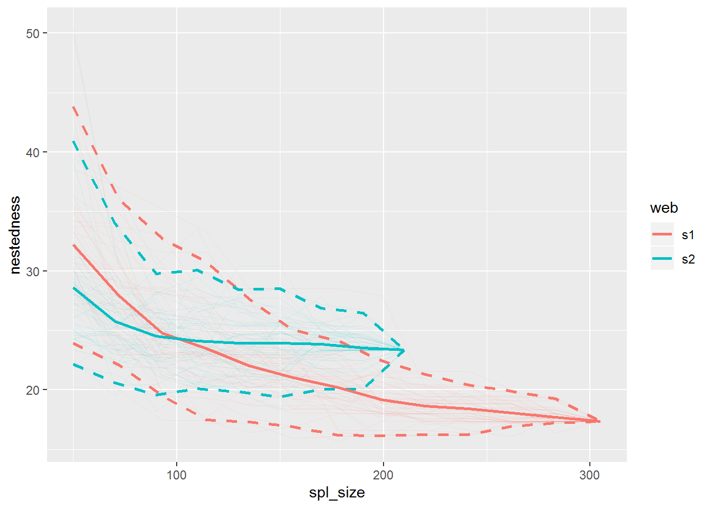
The dashed lines represent the quantile based 95% confidence intervals. The continuous thicker lines represent the mean values at different sample sizes. The final sample sizes are actually the entire webs (total number of interactions). Each bootstrap/iteration is represented by a thinner transparent line.
niche overlap
Resample two networks with computing “niche overlap”.
The computation here is carried for both species levels (lower and higher, so plants and insects). If you are interested only in one level, then specify that with the parameter level (level = 'lower' or level = 'higher').
lst_niov <- list(s1 = Safariland_1, s2 = Safariland_2) %>%
lapply(web_matrix_to_df) %>%
boot_networklevel(col_lower = "lower", # column name for plants
col_higher = "higher", # column name for insects
index = "niche overlap",
level = "both", # for both levels (lower & higher)
start = my_start,
step = my_step,
n_boot = my_n_boot,
n_cpu = 3)Plot the bootstrap results.
niov_gg <- gg_networklevel(lst_niov)
niov_gg$niche.overlap.HL # for higher level species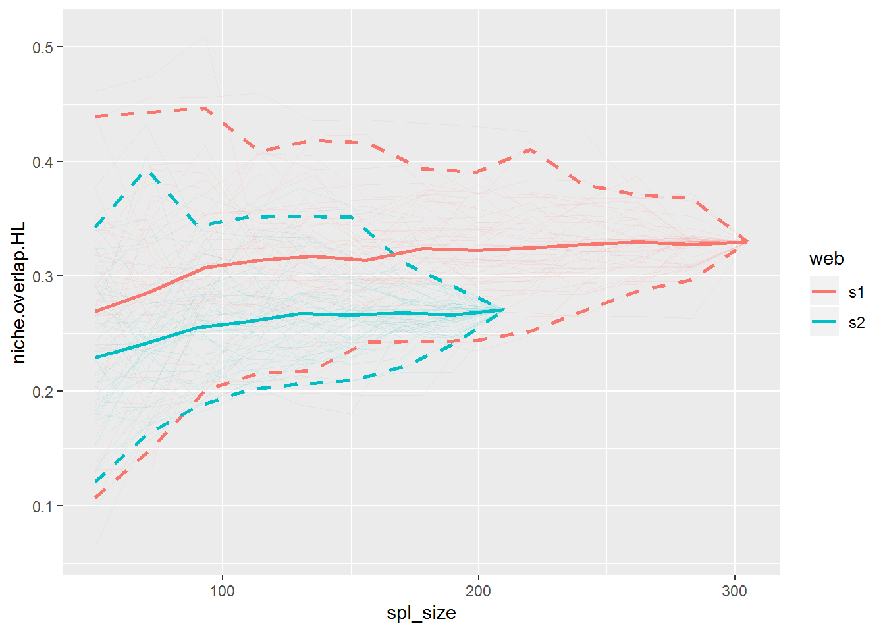
niov_gg$niche.overlap.LL # for lower level species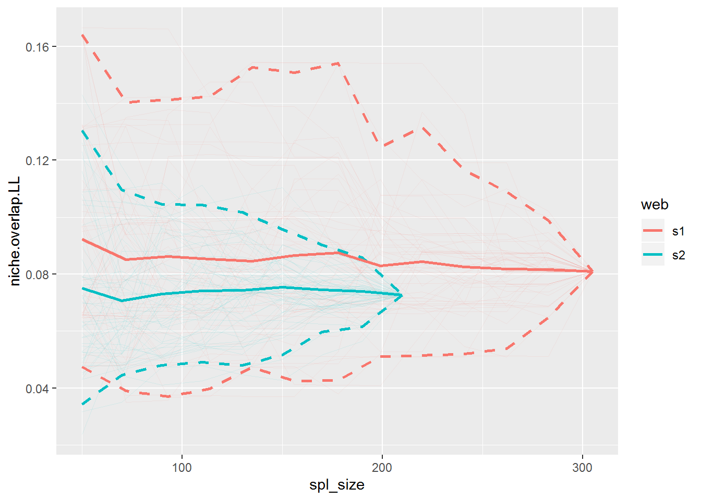
Species-level indices/metrics
betweenness
Resample two networks with computing “betweenness”.
Compare “betweenness” of ‘Alstroemeria aurea’ (lower level species) between the two networks. Also compare the betweenes of ‘Allograpta.Toxomerus’ (higher level species).
If you are interested only in the lower or higher level species computations, then set the parameter level accordingly (level = 'lower' or level = 'higher'). In such cases, then specify only one of the sp_lower and sp_higher in the plotting functions gg_specieslevel_compare_webs or gg_specieslevel_web_by_web.
lst_btw <- list(s1 = Safariland_1, s2 = Safariland_2) %>%
lapply(web_matrix_to_df) %>%
boot_specieslevel(col_lower = "lower", # column name for plants
col_higher = "higher", # column name for insects
index = "betweenness",
level = "both", # for both levels (lower & higher)
start = my_start,
step = my_step,
n_boot = my_n_boot,
n_cpu = 3)Plot the bootstrap results.
btw_comp_Aa_At_gg <- lst_btw %>%
get_stats_multi() %>%
gg_specieslevel_compare_webs(sp_lower = "Alstroemeria aurea",
sp_higher = "Allograpta.Toxomerus")
btw_comp_Aa_At_gg # plot all## $higher_level## Warning: Removed 32 rows containing missing values (geom_path).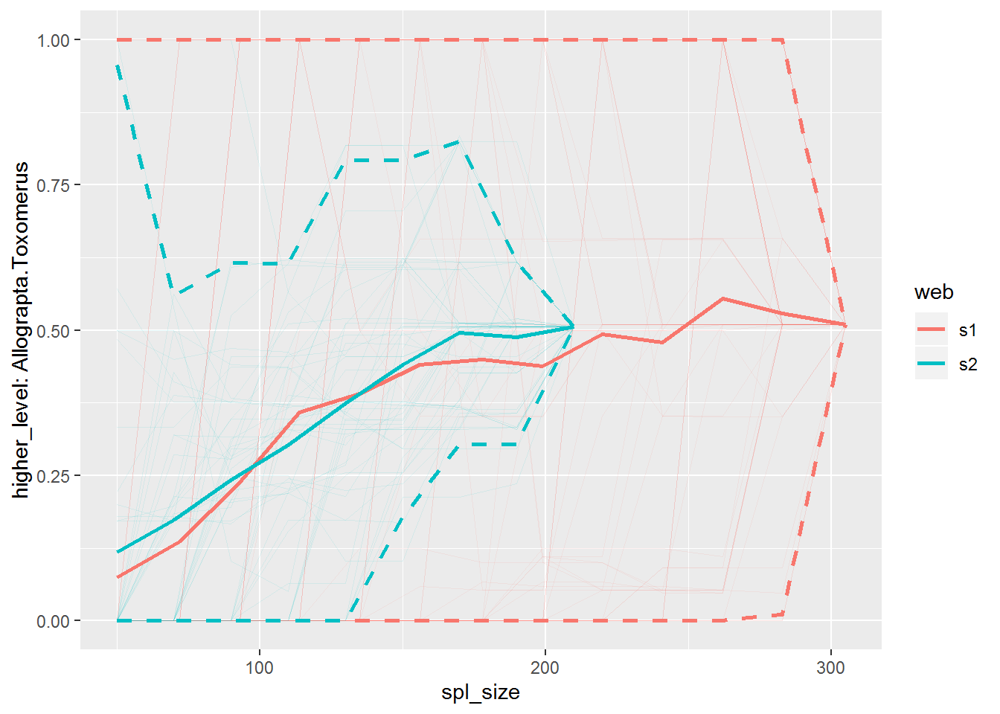
##
## $higher_level_weighted## Warning: Removed 32 rows containing missing values (geom_path).
##
## $lower_level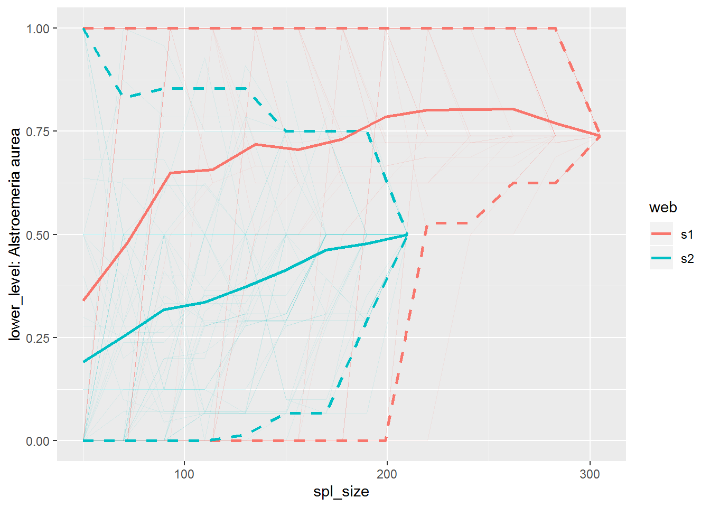
##
## $lower_level_weighted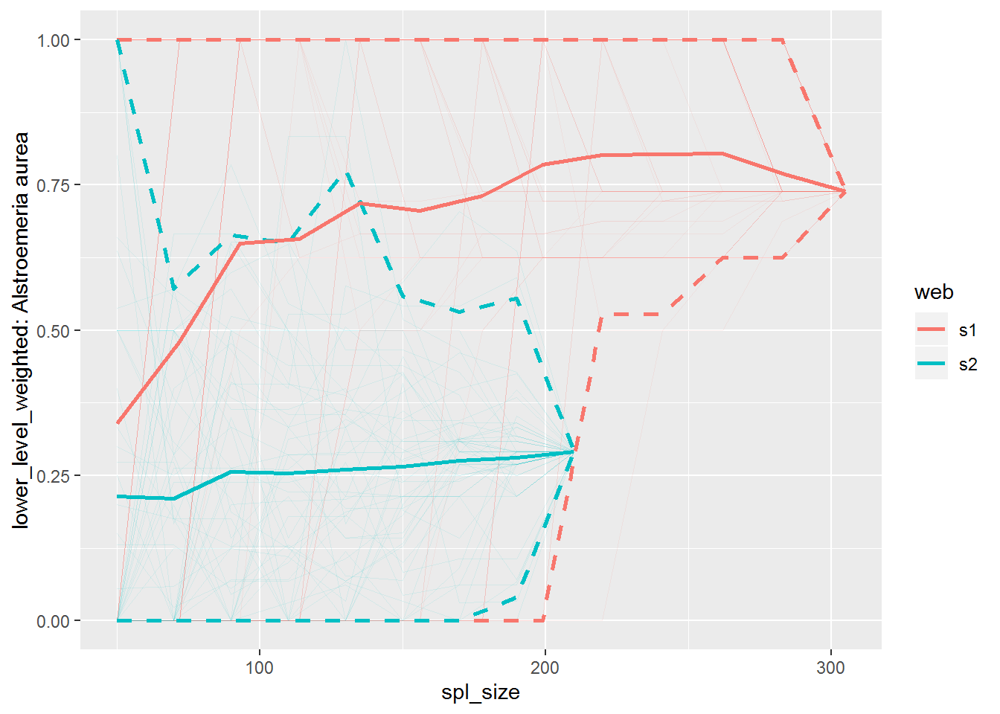
Plot resampled betweenness of all species at both levels of selected common species.
Selected common species:
common_lower_sp <- intersect(rownames(Safariland_1), rownames(Safariland_2))
common_higher_sp <- intersect(colnames(Safariland_1), colnames(Safariland_2))
btw_sp_webs_gg <- lst_btw %>%
gg_specieslevel_web_by_web(sp_lower = common_lower_sp[1:5],
sp_higher = common_higher_sp[1:5])
btw_sp_webs_gg## $s1.higher_level## Warning: Removed 775 rows containing missing values (geom_path).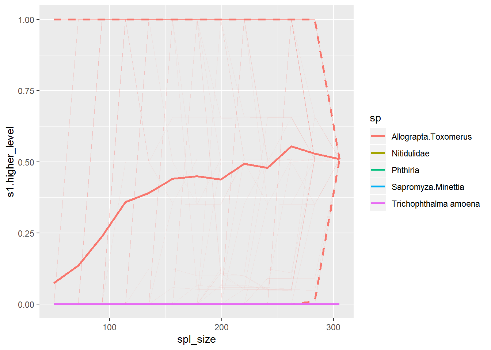
##
## $s1.higher_level_weighted## Warning: Removed 780 rows containing missing values (geom_path).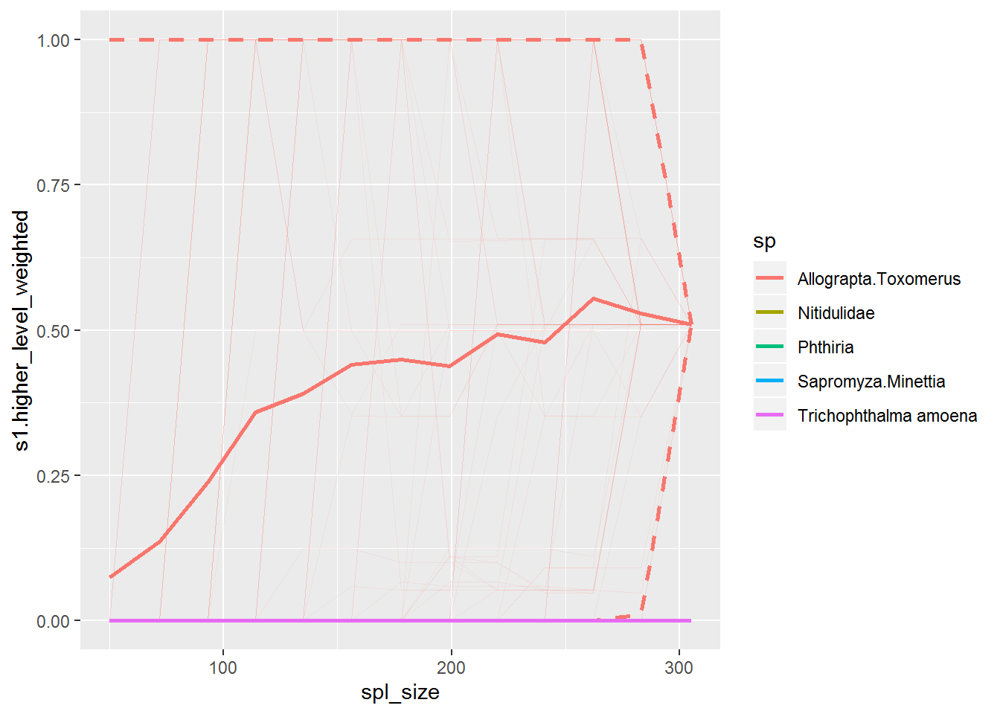
##
## $s1.lower_level## Warning: Removed 266 rows containing missing values (geom_path).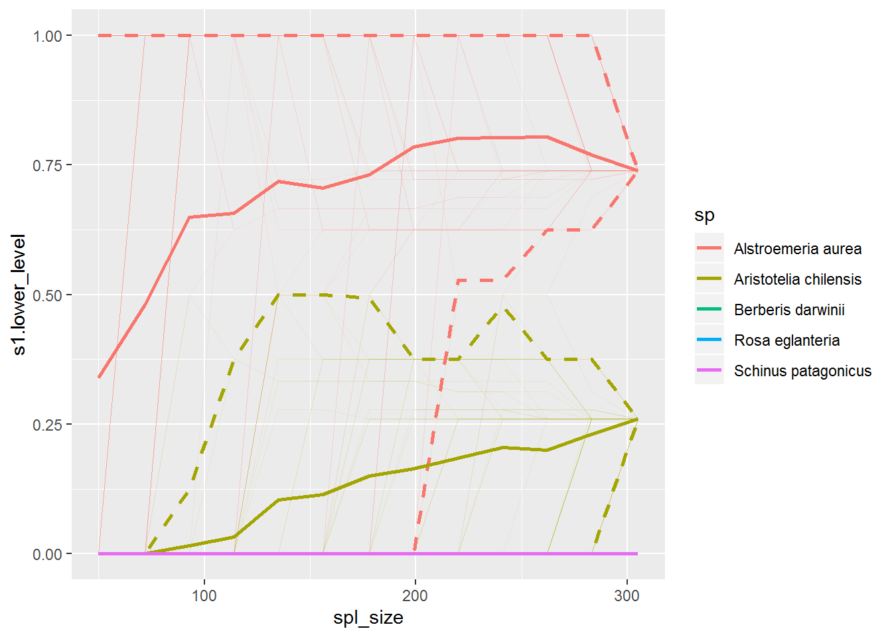
##
## $s1.lower_level_weighted## Warning: Removed 540 rows containing missing values (geom_path).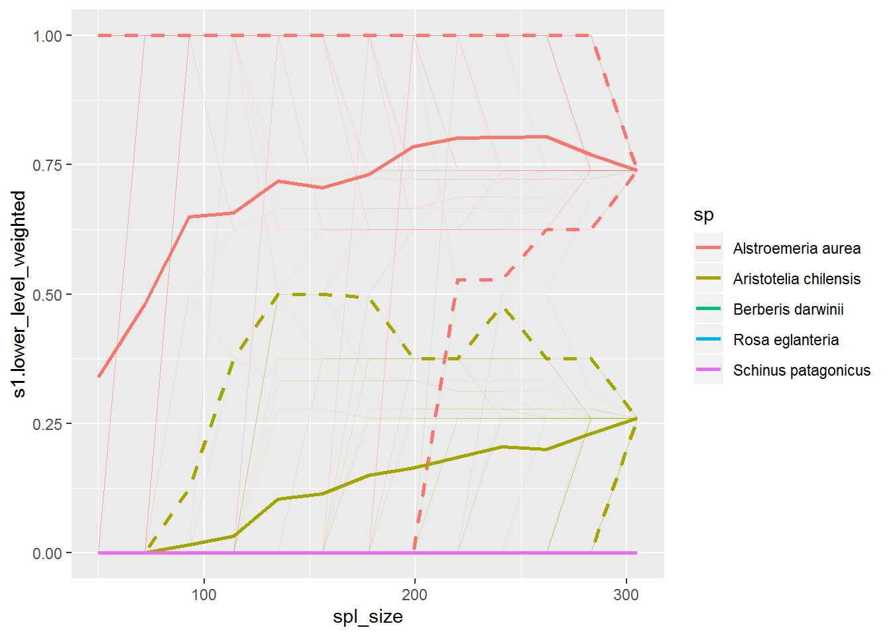
##
## $s2.higher_level## Warning: Removed 482 rows containing missing values (geom_path).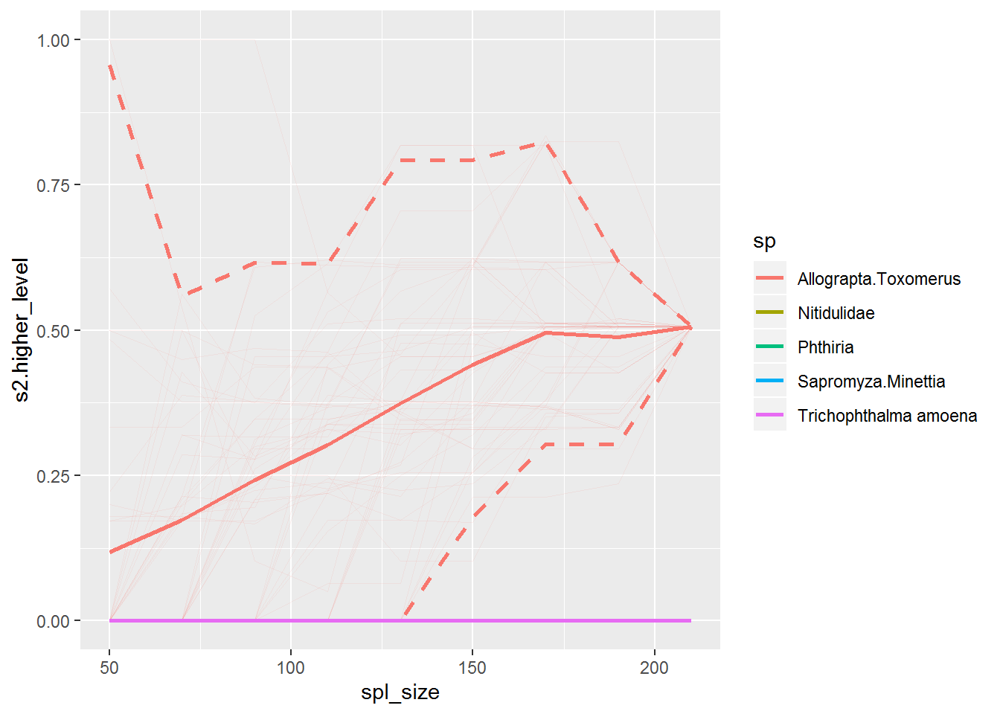
##
## $s2.higher_level_weighted## Warning: Removed 482 rows containing missing values (geom_path).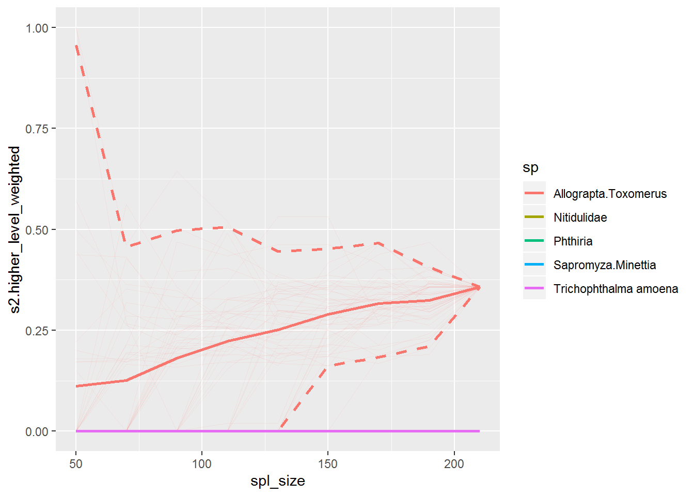
##
## $s2.lower_level## Warning: Removed 24 rows containing missing values (geom_path).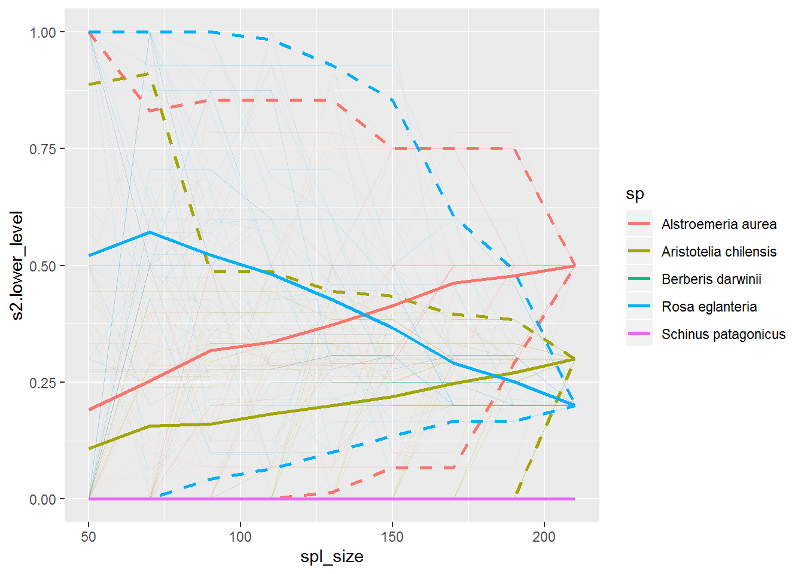
##
## $s2.lower_level_weighted## Warning: Removed 198 rows containing missing values (geom_path).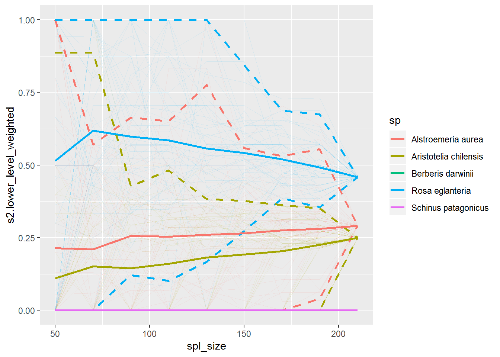
To plot betweenness of all species at all levels for each web/network, just leave the parameters sp_lower and sp_higher to default to NULL.
btw_sp_webs_gg_all <- lst_btw %>%
gg_specieslevel_web_by_web()## Warning in filter_species(lst = metrics_stats[[i]], sp_lower = sp_lower, :
## `sp_higher` not provided, all higher level species will be used!
## Warning in filter_species(lst = metrics_stats[[i]], sp_lower = sp_lower, :
## `sp_higher` not provided, all higher level species will be used!## Warning in filter_species(lst = metrics_stats[[i]], sp_lower = sp_lower, :
## `sp_lower` not provided, all lower level species will be used!
## Warning in filter_species(lst = metrics_stats[[i]], sp_lower = sp_lower, :
## `sp_lower` not provided, all lower level species will be used!## Warning in filter_species(lst = metrics_stats[[i]], sp_lower = sp_lower, :
## `sp_higher` not provided, all higher level species will be used!
## Warning in filter_species(lst = metrics_stats[[i]], sp_lower = sp_lower, :
## `sp_higher` not provided, all higher level species will be used!## Warning in filter_species(lst = metrics_stats[[i]], sp_lower = sp_lower, :
## `sp_lower` not provided, all lower level species will be used!
## Warning in filter_species(lst = metrics_stats[[i]], sp_lower = sp_lower, :
## `sp_lower` not provided, all lower level species will be used!R Session info
sessionInfo()## R version 3.6.1 (2019-07-05)
## Platform: x86_64-w64-mingw32/x64 (64-bit)
## Running under: Windows 7 x64 (build 7601) Service Pack 1
##
## Matrix products: default
##
## locale:
## [1] LC_COLLATE=English_United States.1252
## [2] LC_CTYPE=English_United States.1252
## [3] LC_MONETARY=English_United States.1252
## [4] LC_NUMERIC=C
## [5] LC_TIME=English_United States.1252
##
## attached base packages:
## [1] stats graphics grDevices utils datasets methods base
##
## other attached packages:
## [1] bipartite_2.13 sna_2.4 network_1.15
## [4] statnet.common_4.3.0 vegan_2.5-6 lattice_0.20-38
## [7] permute_0.9-5 magrittr_1.5 bootstrapnet_0.0.0.9000
##
## loaded via a namespace (and not attached):
## [1] spam_2.4-0 tidyselect_0.2.5 xfun_0.10
## [4] purrr_0.3.3 splines_3.6.1 colorspace_1.4-1
## [7] vctrs_0.2.0 htmltools_0.4.0 yaml_2.2.0
## [10] mgcv_1.8-28 rlang_0.4.1 pillar_1.4.2
## [13] glue_1.3.1 matrixStats_0.54.0 foreach_1.4.7
## [16] lifecycle_0.1.0 stringr_1.4.0 fields_9.9
## [19] dotCall64_1.0-0 munsell_0.5.0 gtable_0.3.0
## [22] evaluate_0.14 codetools_0.2-16 coda_0.19-3
## [25] labeling_0.3 knitr_1.25 doParallel_1.0.15
## [28] parallel_3.6.1 Rcpp_1.0.2 scales_1.0.0
## [31] backports_1.1.5 ggplot2_3.2.1 digest_0.6.22
## [34] stringi_1.4.3 dplyr_0.8.3 grid_3.6.1
## [37] tools_3.6.1 maps_3.3.0 lazyeval_0.2.2
## [40] tibble_2.1.3 cluster_2.1.0 crayon_1.3.4
## [43] tidyr_1.0.0 pkgconfig_2.0.3 zeallot_0.1.0
## [46] MASS_7.3-51.4 ellipsis_0.3.0 Matrix_1.2-17
## [49] data.table_1.12.6 rmarkdown_1.16 assertthat_0.2.1
## [52] rstudioapi_0.10 iterators_1.0.12 R6_2.4.0
## [55] igraph_1.2.4.1 nlme_3.1-141 compiler_3.6.1